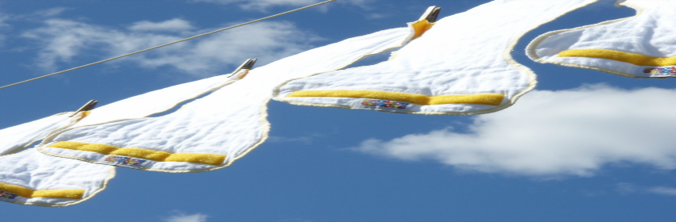

Washing
Washing BB Cloth Diapers is pretty simple, straight forward and extremely easy. After a few weeks you'll look back at how freaked out you were about washing cloth diapers and just wonder why? BB Cloth Diapers will need to be washed once prior to their first use. Important: As soon as you take the diaper off your baby or any other time before they go in the wash fold down the outer velcro tabs so they don't stick together.
Newborn - 6 Months
At this stage we recommend a wet pail and a dry pail; the dry pail will most likely be beside the change table and the wet pail in the bathtub, bathroom, or laundry room. Pee diapers will go in the dry pail, poop diapers in the wet pail.
The Wet Pail: Newborn - 6 Months
We recommend filling the pail about 3/4's with water and adding some vinegar; the vinegar will neutralize the odor (which really isn't that bad). Before your baby is eating solids it is fine to just throw the soiled diapers directly into the wet pail without rinsing them first (of course you can give them a quick rinse and scrub in the sink if you want). On wash day drain the water into the tub or toilet (whatever is easiest) then dump the diapers along with any remaining water into the washing machine; there is no need to wring out each diaper before it goes in the wash.
The Dry Pail/Pee Diapers: 6 Months - Potty Training
The dry pail/pee diapers will be the same with the exception of the morning diaper (instructions below) and obviously there is no water in the pail.
The Wet Pail: 6 Months - Potty Training
After your baby starts eating solid foods you can keep the wet pail, now you will simply shake the poop from the pad into the toilet before tossing it in the wet pail. The diaper can most times go into the dry pail because the poop will mostly land on the pad so only the pads are going into the wet pail. If the diaper is really messy and the poop doesn't shake off you can just put the whole pad in your toilet (clean toilet) to soak for a while and scrub it off a bit before throwing it in the wet pail.
Washing
with 36 diapers you will be washing on average every 3 days, possibly every other day in the very beginning, then about every 4 days after 6 months. If for some reason (starting potty training, baby has larger pees less often) you are going more than 4 days between washing it is a good idea to pre-soak your diapers in cold water before washing. Next (this is your first step if not going longer than 4 days) wash them in hot water with about half the recommended amount of detergent unless specifically baby friendly on the longest wash cycle with the highest water level.
Instead of fabric softener use 1/4 - 1/2 cup of vinegar. Use the downy ball or fabric softener dispenser.
Drying
Throw the diapers in the dryer with a large white towel. This helps to cut down on the drying time. Your Done!
Diaper Safe Detergents
Tide, Purex, Sunlight, Norwex and many store brands and other natural detergents are good choices. Ivory snow is not a good choice because it builds up on the diapers making them less absorbent. The decision is yours do whatever you are comfortable with and you think is best for your baby. The biggest thing with detergent is to make sure it is properly rinsed out to avoid build up.
DO NOT USE BLEACH OR FABRIC SOFTENERS, BLEACH ATTACKS THE FIBERS OF YOUR COTTON DIAPERS SHORTENING THEIR LIFE AND REDUCING ABSORBENCY, FABRIC SOFTENERS BUILD UP ON THE DIAPERS CAUSING REDUCED ABSORBENCY.
Diaper Rash Creams
Avoid using diaper rash creams containing zinc oxide, they are difficult to wash out. Instead try olive oil applied with a cotton ball or a natural diaper rash cream (there are some great options). If the rash looks bad and or painful: F it use whatever cream works. It won't ruin the diapers and the cream will come out after a few washes. The most important thing is the comfort of your baby not your diapers.
What Pail Should I use
We recommend using a garbage can with a removable liner, found a good one at Walmart for about $12, buy 2. Anything with a removable liner and or detached lid is good. You don't need to spend $45 on a pail specifically for cloth diapers.
What to do about diaper pail odor?
If you are noticing an odor from your diaper pail, wash it out while the diapers are in the wash. Put in some water and a nice smelling cleaner (or vinegar, lemon), wash/rinse it out and sprinkle some baking soda in the bottom afterward. You'll figure out what works best for you.
When the morning diaper starts to stink
I would just quickly wash the overnight diaper out in the sink with whatever soap is there to get rid of the smell before putting it in the diaper pail.
When should I start to potty train?
Every baby is different but most can start around 16 months (or earlier) and be fully trained by 18-24 months. At this age their bladder is usually too small to go without an overnight diaper. It is best to wait until they can walk and tell you they need to "pee" or go "pot." Babies who wear BB Cloth Diapers understand the difference between wet and dry and will be much easier to get out of diapers than babies who wear disposables or super absorbent pocket diapers. Don't take the potty training too seriously, don't make it a stressful situation for you or your child; it will happen, just pay attention. It is a lot of work to potty train in the beginning but well worth the effort. A lot of people thought I was crazy when I started to work on potty training with my daughter around 12 months, but it was well worth it to not have to deal with diapers when she was only 18 months old.
Washing Your Covers
You will want to be easy on the covers and hand wash them to prevent cracking and tearing. By hand wash we simply mean quickly scrubbing them up in the bathroom sink using whatever soap is there (lukewarm water). After they have been washed shake them out and leave them propped up to dry quickly, near a heating vent works particularly well. In the summer line drying works very well.